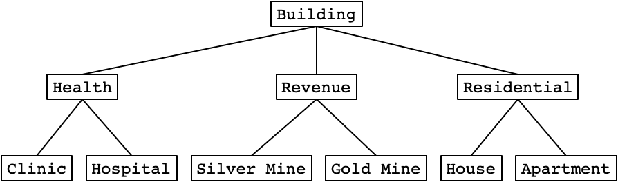

We value academic integrity very highly. Please read the Honor Code section on our course webpage to make sure you understand what is considered as plagiarism and what the penalties are. The following are some of the highlights:
The objective of this assignment is to provide you with practice on the OOP concepts of Inheritance and Polymorphism, as well as writing code with less reliance on a provided skeleton code. Upon completion of this assignment, you should be able to:
virtual.In this and the coming assignment, you are going to implement a simple city simulation game, which we call it SimpleCity. In this assignment, you first implement the game logic that can be presented in a command-line program. In the next assignment, you are going to implement the graphical user interface (GUI) for the game.
The game consists of a city. A city consists of a square grid where buildings can be constructed on each grid cell. Also, a city has a budget for building constructions. A building can be built only if the cost to construct the building does not exceed the budget. At most one building can be constructed in each grid cell.
There are three categories of buildings:
Therefore, it requires all three categories of buildings for a city to grow in both population and budget.
There are six types of buildings, each type of building belongs to one category:
Buildings of the same category share some common attributes. The building hierarchy is visualized in the following diagram:

city's population + population in neighboring buildings.2 * (city's population + population in neighboring buildings).-population of the building.60 / (1 + number of neighboring Health buildings).360 / (1 + number of neighboring Health buildings).0.50 * (1 + neighboring Residential building)250 * (1 + neighboring Residential building)population growth rate of the city * (number of neighboring Health buildings - number of neighboring Gold Mines) / 10maximum population - populationgrid[0][0], grid[0][1], ... ,grid[1][0], grid[1][1], ..., grid[grid_size - 1][0], ...
0Building::Type enum (See Building.h in Code Structure). For example, 1 denotes a Clinic.5 10 denotes a House with 10 population.grid[0][0], a House with 10 population at grid[1][1]:
2
100
5
1
0
0
5 10
pa3
├── City.cpp
├── City.h
├── GameEngine.cpp
├── GameEngine.h
├── Makefile
├── buildings/
│ ├── Apartment.cpp
│ ├── Apartment.h
│ ├── Building.cpp
│ ├── Building.h
│ ├── BuildingInformationFormatString.h
│ ├── Clinic.cpp
│ ├── Clinic.h
│ ├── GoldMine.cpp
│ ├── GoldMine.h
│ ├── Health.cpp
│ ├── Health.h
│ ├── Hospital.cpp
│ ├── Hospital.h
│ ├── House.cpp
│ ├── House.h
│ ├── Residential.cpp
│ ├── Residential.h
│ ├── Revenue.cpp
│ ├── Revenue.h
│ ├── SilverMine.cpp
│ └── SilverMine.h
├── main_cli.cpp
├── test-city.txt
├── test-info.txt
└── test-load.txt
Makefile: Makefile to build SimpleCity and create ZINC submission zip file. See Submission & GradingGameEngine.h, GameEngine.cpp: Code for the implemented command-line game engine. No need to modify.main_cli.cpp: The main() function. No need to modify.City.h, City.cpp: Implementation of the City class. Implement the methods in City.cpp. Do not modify City.hbuildings/Building.h, buildings/Building.cpp: Implementation of the Building abstract base class. Implement the methods in Building.cpp. Do not modify Building.hbuildings/BuildingInformationFormatString.h: Contains useful strings to display building information.buildings/: Implementations of classes derived from Building. Complete the class declarations in corresponding .h files. Implement the methods in corresponding .cpp file.test-city.txt, test-info.txt and test-load.txt: Three save files for testing.
class City {
public:
struct Coordinates {
int x;
int y;
...
};
...
private:
Building ***grid;
int grid_size;
int budget;
int turn;
};
The City class is defined in City.h. It has four private members. grid is a 2D dynamic array of building pointers. The 2D array is always a square. The size of it is specified in grid_size. budget denotes the budget of the city. turn is the turn of the city.
The Coordinates struct is used to specify the coordinates of a particular grid cell in some methods of the City class. For (x,y) coordinates, it refers to the grid cell grid[x][y].
When Building objects are added to the city, the city takes ownership of the Building objects.
class Building {
public:
enum class Type {
CLINIC = 1,
HOSPITAL = 2,
SILVER_MINE = 3,
GOLD_MINE = 4,
HOUSE = 5,
APARTMENT = 6
};
enum class Category {
HEALTH,
REVENUE,
RESIDENTIAL
};
...
protected:
explicit Building(City &city);
City &city;
private:
Building *neighboring_buildings[4]{};
};
The Building class is defined in Building.h. It holds a reference to the city where the building was constructed. This city reference. The constructor is marked as protected, meaning that it is not possible to create a Building instance. The constructor and the city reference can only be accessed from derived classes. neighboring_buildings is an array of 4 pointers to buildings, all initialized to nullptr. This is used to access the neighboring buildings when computing some attributes of the building.
Two enum classes for the building type and building category are also defined. Integer values for the building type are also defined. You may want to use static_cast to convert between building type and the corresponding integer value when processing save files.
Implement the following functions of the City class.
City(int size);
size by size. Set all grid cells to nullptr. Set grid size accordingly. Set turn to 1. Initially, the budget is $150. size is always greater than or equal to 1.
City(const std::string &filename);
filename. See Save File Format for the format of the save file. You can assume the file always exists and the format is correct. You can make use of the >> operator. Don't forget to set neighbors when adding buildings to the city.
~City();
Building objects added to the city.
save(const std::string& filename) const;
<< operator.
int get_turn() const;
int get_budget() const;
int get_grid_size() const;
int get_revenue() const;
int get_population() const;
int get_max_population() const;
int get_population_growth() const;
int get_population_growth_rate() const;
Building *get_at(const Coordinates &coordinates) const;
nullptr if the cell has no buildings or the coordinates are out-of-bound.
bool is_empty_at(const Coordinates &coordinates) const;
false if the coordinates are out-of-bound.
bool can_construct(Building::Type type) const;
bool can_construct(Building::Type type, const Coordinates &coordinates) const;
false if the coordinates are out-of-bound.
bool construct_at(Building::Type type, const Coordinates &coordinates);
false. Otherwise, construct the building by setting the grid pointer accordingly, decrease budget and register neighboring buildings. For residential buildings, set the population to 0. Return true.
bool demolish_at(const Coordinates &coordinates);
false. Otherwise, demolish the building by setting the grid pointer accordingly and deregister neighboring buildings. Return true.
void move_to_next_turn();
Implement the following functions of the Building class and its derived classes.
Building(City &city);
Health(City &city);
Clinic(City &city);
Hospital(City &city);
Revenue(City &city);
SilverMine(City &city);
GoldMine(City &city);
Residential(City &city, int population);
House(City &city, int population);
Apartment(City &city, int population);
virtual ~Building() = default;
virtual Building::Type get_type() const = 0;
virtual Building::Category get_category() const = 0;
virtual int get_cost() const = 0;
Building::Type::APARTMENT, category Building::Category::RESIDENTIAL and cost 300.
static const int cost{0};
virtual std::string get_long_information() const = 0;
virtual std::string get_short_information() const = 0;
BuildingInformationFormatString.h for the information strings.
Clinic
Contribution to Population Growth Rate: [value]
Clinic
Contribution to Population Growth Rate: [value]
60 / (1 + Neighboring Health Buildings)
Hospital
Contribution to Population Growth Rate: [value]
Hospital
Contribution to Population Growth Rate: [value]
360 / (1 + Neighboring Health Buildings)
Silver Mine
Revenue: [value]
Silver Mine
Revenue: [value]
1 * (Total Population + Neighboring Population)
Gold Mine
Revenue: [value]
Gold Mine
Revenue: [value]
2 * (Total Population + Neighboring Population)
max population - population:
House
Population: [value]
Max Population: [value]
Contribution to Population Growth Rate: [value]
Population Growth: [value]
House
Population: [value]
Max Population: [value]
50 * (1 + Neighboring Residential Buildings)
Contribution to Population Growth Rate: [value]
-population
Population Growth: [value] (Limited by Quota: [value])
(Population Growth Rate of the City * (Neighboring Health Buildings - Neighboring Gold Mines)) / 10
max population - population:
Apartment
Population: [value]
Max Population: [value]
Contribution to Population Growth Rate: [value]
Population Growth: [value]
Apartment
Population: [value]
Max Population: [value]
250 * (1 + Neighboring Residential Buildings)
Contribution to Population Growth Rate: [value]
-population
Population Growth: [value] (Limited by Quota: [value])
(Population Growth Rate of the City * (Neighboring Health Buildings - Neighboring Gold Mines)) / 10
virtual int get_revenue() const;
city's population + population in neighboring buildings.2 * (city's population + population in neighboring buildings).
virtual int get_population() const;
virtual int get_max_population() const;
50 * (1 + neighboring Residential building).250 * (1 + neighboring Residential building).
virtual int get_population_growth() const;
population growth rate of the city * (number of neighboring Health buildings - number of neighboring Gold Mines) / 10.maximum population - population.
virtual int get_population_growth_rate_contribution() const;
-population of the building.60 / (1 + number of neighboring Health buildings).360 / (1 + number of neighboring Health buildings).
virtual void increase_population(int population);
bool register_neighboring_building(Building *building);
bool deregister_neighboring_building(Building *building);
nullptr) to the neighboring_buildings array. If the building is already [registered/already unregistered, or not registered], return false. Otherwise, return true. The order of buildings in the array does not matter.
int number_neighboring_residential_buildings() const;
int number_neighboring_health_buildings() const;
int number_neighboring_gold_mines() const;
int number_neighboring_population() const;
In the skeleton files, you can find the save file test-city.txt. Here are the city status and city map.
Turn: 8
Budget: $3
Revenue: 99
Max Population: 200
Population: 35
Population Change: 25
Population Growth Rate: 85
0123456789
+----------+
0| |
1| |
2| |
3| S |
4| EEC |
5| CCS |
6| |
7| |
8| |
9| |
+----------+(4,5) and (5,5), the number of neighboring Health buildings are 1. Therefore, their contribution to population growth rate is 60 / 2 = 30.
Clinic
Contribution to Population Growth Rate: 30
60 / (1 + Neighboring Health Buildings)
(6,4), the number of neighboring Health buildings are 0. Therefore, its contribution to population growth rate is 60 / 1 = 60.
Clinic
Contribution to Population Growth Rate: 60
60 / (1 + Neighboring Health Buildings)
(6,5), the total population is 35, and the number of neighboring population is 0. Therefore, its revenue is 35 + 0 = 35.
Silver Mine
Revenue: 35
1 * (Total Population + Neighboring Population)
(4,3), the total population is 35, and the number of neighboring population is 29 (the population of the House at (4,3) is 29). Therefore, its revenue is 35 + 29 = 64.
Silver Mine
Revenue: 64
1 * (Total Population + Neighboring Population)
For the House at (4,4), the population is 29. For the House at (5,4), the population is 6. Therefore, the contribution to population growth rate of the two houses are -29 and -6. As a result, the population growth rate of the city is -29 - 6 + 30 + 30 + 60 = 85 (including Health buildings).
For the House at (4,4), the neighboring Residential buildings is 1, the neighboring Health buildings is 1, and the neighboring Gold Mines is 0. Therefore, the population growth is 85 * (1 - 0) / 10 = 8, and the max population is 50 * (1 + 1) = 100.
House
Population: 29
Max Population: 100
50 * (1 + Neighboring Residential Buildings)
Contribution to Population Growth Rate: -29
-population
Population Growth: 8 (Limited by Quota: 71)
(Population Growth Rate of the City * (Neighboring Health Buildings - Neighboring Gold Mines)) / 10
For the House at (5,4), the neighboring Residential buildings is 1, the neighboring Health buildings is 2, and the neighboring Gold Mines is 0. Therefore, the population growth is 85 * (2 - 0) / 10 = 17, and the max population is 50 * (1 + 1) = 100.
House
Population: 6
Max Population: 100
50 * (1 + Neighboring Residential Buildings)
Contribution to Population Growth Rate: -6
-population
Population Growth: 17 (Limited by Quota: 94)
(Population Growth Rate of the City * (Neighboring Health Buildings - Neighboring Gold Mines)) / 10
3 + (35 + 64) = $102. Population of the House at (4,4) is increased to 29 + 8 = 37. Population of the House at (5,4) is increased to 6 + 17 = 23. The total population is 37 + 23 = 60.
Turn: 9
Budget: $102
Revenue: 157
Max Population: 200
Population: 60
Population Change: 18
Population Growth Rate: 60
Use the Makefile provided in the skeleton file for compilation. Simply run make in the directory that contains main_cli.cpp and Makefile. After successful compilation, an executable, simplecity (or simplecity.exe) will be produced.
Note: If you are a Windows user and you wish to run simplecity.exe outside VSCode, change line 6 of Makefile from:
LDFLAGS :=
LDFLAGS := -static
Deadline: 8 November 2021 Monday HKT 23:59.
You may earn 8% course grade for each PA via Automated Grading on the ZINC Online Submission System. Please check here for a usage overview of ZINC.
There are a number of files you need to submit to ZINC. A Makefile target is provided to automate the creation of the zip file. Run the following command in the directory that contains Makefile:
make pa3.zip
Then, pa3.zip is produced. Submit pa3.zip to ZINC. It contains the following files:
City.cppbuildings/Building.cppbuildings/Health.hbuildings/Health.cppbuildings/Revenue.hbuildings/Revenue.cppbuildings/Residential.hbuildings/Residential.cppbuildings/Clinic.hbuildings/Clinic.cppbuildings/Hospital.hbuildings/Hospital.cppbuildings/SilverMine.hbuildings/SilverMine.cppbuildings/GoldMine.hbuildings/GoldMine.cppbuildings/House.hbuildings/House.cppbuildings/Apartment.hbuildings/Apartment.cppThere will be a penalty of -1 point (out of a maximum 100 points) for every minute you are late. For instance, since the deadline is 23:59:00 on 8 November 2021, if you submit your solution at 1:00:00 on 9 November 2021, there will be a penalty of -61 points for your assignment. However, the lowest grade you may get from an assignment is zero: any negative score after the deduction due to late penalty (and any other penalties) will be reset to zero.
Here are the revealed test cases on ZINC and the input.
test-load.txt, print status and map, then quit.
test-info.txt, print the short and long information string for each type of building, then quit.
test-city.txt, move to next turn, check status, move to a few turns later, check status, then quit.
Before the program terminates, you need to ensure you have deallocated all dynamic memory you have allocated in the entire execution of the program.
Memory leak is checked by using the sanitizer, invoked by the -fsanitize=address,leak,undefined option (See related documentation here). Some revealed test cases on ZINC also check for memory leak (See Test Cases).
Although some test cases on ZINC already check for memory leak, you may still want to check for memory leak yourself. However, the above option does not work in Windows minGW g++. Instead, you can do so by remote connecting using SSH to the machines in the Linux Lab (Lab 2). The following shows you how to do so by using the Virtual Barn. You may want to adjust the steps accordingly if you are familiar with using SSH on your own computer.
PuTTY. There is a shortcut on your Desktop. Enter a lab 2 machine (csl2wkXX.cse.ust.hk, where XX=[01 ... 53], for example csl2wk13.cse.ust.hk) as the Host Name. Note: If that server doesn't work, you may try other servers by changing XX.
pwd (Print Working Directory) to verify this. It should show /homes/your_login
FileZilla from Start Menu. Click "File" -> "Site Manager" -> "New Site". Choose SFTP for protocol according to the screenshot below. Enter csl2wk13.cse.ust.hk (or the server you used in the previous step) as Host. Choose "Ask for password" for the Logon Type.
/homes/your_login. Also, you need to use this Makefile in the machines in Linux Lab. This Makefile includes the sanitizer option on compilation. You can close FileZilla after doing so.
PuTTY, and compile your program using the make command:
make
./simplecity
This assignment was originally proposed and designed by Yu Hei CHAU.